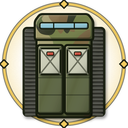

유닛 공격 타입 나누기
지금 강화는 총격대·포격대·저격대 3묶음입니다. 사장님 말씀대로 유닛 102종 전체를 "어떻게 공격하나"로 나눠 6가지 타입을 만들어 봤습니다. 모두 육군 유닛이고, 해군·공군 유닛은 없습니다.
타입 6가지
연사형27종
총알을 빠르게 쏟아붓는다. 소총·기관총·발칸·대공포.
- 잘 잡음광란(빠르고 약한 좀비), 치유체
- 약함강시·철갑귀·방패병처럼 단단한 좀비


- 흔함
- K2소총수 · K3기관총사수 · 의무병 · 수송병 · 군견병 · 경계병 · 정비병
- 안흔함
- K3기관총반 · 발칸포반 · 정찰병 · 의무지원반 · 수색대 · 전방 수색조 · K6 중기관총반
- 특별
- K200 APC · K808 백호 · 비호 · 수리온 · K263 자주발칸 · UH-60 블랙호크
- 희귀
- K21 보병전투차 · 천호 방공복합 · 비호복합 · K30 비호Ⅱ · K311A1 보급트럭
- 전설
- K10 탄약운반
- 신화
- LAH 편대
등급 분포 — 흔함·안흔함·특별에 20종이 몰려 있고, 전설 이상은 2종뿐. 초반 주력이고 후반엔 다른 타입으로 넘어가는 흐름.
관통형23종
한 발로 꿰뚫는다. 저격·대전차 미사일·전차 주포·특수부대 정밀 사격.
- 잘 잡음강시·철갑귀·보스 (단단한 껍질을 뚫음)
- 약함한꺼번에 몰려오는 광란 떼


- 흔함
- 판처파우스트 · 신궁사수
- 안흔함
- 저격수 · 지정사수 · 미사일반 · 90mm 무반동총
- 특별
- 천마 · 특공대 · 메티스-M 대전차
- 희귀
- K1A2 전차 · 특전여단 · 스파이크 NLOS
- 전설
- K2 흑표 · 707특임대 · 현궁 대전차 · K1E1 전차 · AH-64E 아파치
- 신화
- 아파치 공격헬기대대
- 초월
- 수도기계화사단 · 신속대응사단
- 히든
- 비밀정보부
- 비밀
- 스텔스 저격조 · 특수정찰대
등급 분포 — 흔함부터 비밀까지 모든 등급에 있음. 가장 고른 타입.
폭발형15종
떨어진 자리에서 터져 주변까지 맞힌다. 박격포·유탄·자주포·다연장 로켓.
- 잘 잡음분열체·좀비 떼, 강시·방패병
- 약함치유체·철갑귀


- 흔함
- 척탄병
- 안흔함
- 박격포반 · K4 고속유탄기관총
- 특별
- KH179 견인포 · K105A1 자주포 · 500MD · K242 박격포차 · K136 구룡
- 희귀
- K9 천둥 · LAMD 요격체계
- 전설
- 천무 다연장 · K9A1 자주포
- 신화
- 군단 포병여단 · 육군 방공여단
- 비밀
- 자폭드론팀
등급 분포 — 특별 등급에 5종이 몰림. 초월·히든에는 없음 → 끝판용 폭발형 1종 추가 후보.
진동형15종
큰 한 방이 땅을 울려 주변을 흔들고 기절시킨다. 탄도미사일(현무 계열)·공병 폭파.
- 잘 잡음보스·변종 군주 (큰 한 방과 기절), 방패병
- 약함공격이 느려 빠른 광란은 놓치기 쉬움




- 흔함
- 공병
- 안흔함
- 공병중대
- 희귀
- KM9ACE 전투공병차 · 현무-2 · 현무-2A · KTSSM
- 전설
- 현무-3 · 미사일여단 · KTSSM-II · K808A 천산
- 신화
- 현무-5 · ATACMS
- 초월
- 전략사령부
- 히든
- 현무-Ω · 코드네임 유령
등급 분포 — 희귀·전설에 8종이 몰림. 특별 등급에는 0종 → 중간 다리 역할 1종 추가 후보.
화염형7종
불·가스·레이저로 계속 태운다. 맞은 뒤에도 피해가 이어진다.
- 잘 잡음분열체·강시 (오래 버티는 좀비를 계속 태움)
- 약함불이 붙기 전에 지나가는 광란


- 안흔함
- 화염방사병 · 화생방병
- 특별
- 화룡 화염장갑차 · 제독차
- 희귀
- AH-1S 코브라
- 전설
- 120mm 자주박격포
- 신화
- 천광 레이저포대
등급 분포 — 7종으로 가장 적고, 흔함과 초월 이상에는 없음 → 새 유닛을 넣는다면 1순위.
전자형15종
드론·통신·전파. 멀리서 원격으로 공격하고, 옆 유닛을 세게 하거나 좀비를 느리게 만든다.
- 잘 잡음광란 떼를 느리게 묶기, 다른 타입과 같이 쓸 때 진가
- 약함혼자서는 피해가 약한 편


- 흔함
- 통신병
- 안흔함
- 정찰드론 · 통신중대
- 특별
- 송골매
- 희귀
- 무인수색차 · TICN 전술통신
- 전설
- 대포병 탐지레이더-II · 드론봇중대
- 신화
- 드론봇 전투단 · 천검 무인편대
- 초월
- 군단 무인정찰대 · 드론봇 군단 · 한미연합사령부
- 히든
- 국군통수권
- 비밀
- 전자전 부대
등급 분포 — 흔함 1종부터 비밀까지 고르게 있음. 초월 등급이 3종으로 가장 많음.
등급별로 고르게 퍼졌나
숫자는 유닛 수입니다. 0은 흐리게 표시했습니다.
| 타입 | 흔함 | 안흔함 | 특별 | 희귀 | 전설 | 신화 | 초월 | 히든 | 비밀 | 합계 |
|---|---|---|---|---|---|---|---|---|---|---|
| 연사형 | 7 | 7 | 6 | 5 | 1 | 1 | 0 | 0 | 0 | 27 |
| 관통형 | 2 | 4 | 3 | 3 | 5 | 1 | 2 | 1 | 2 | 23 |
| 폭발형 | 1 | 2 | 5 | 2 | 2 | 2 | 0 | 0 | 1 | 15 |
| 진동형 | 1 | 1 | 0 | 4 | 4 | 2 | 1 | 2 | 0 | 15 |
| 화염형 | 0 | 2 | 2 | 1 | 1 | 1 | 0 | 0 | 0 | 7 |
| 전자형 | 1 | 2 | 1 | 2 | 2 | 2 | 3 | 1 | 1 | 15 |
| 합계 | 12 | 18 | 17 | 17 | 15 | 9 | 6 | 4 | 4 | 102 |
한 줄 정리 — 관통형·전자형은 고르게 퍼져 있습니다. 연사형은 초반 등급에, 진동형은 희귀·전설에 몰려 있고, 화염형은 7종으로 적습니다. 새 유닛을 넣는다면 화염형, 그다음 특별 등급 진동형과 끝판 폭발형을 먼저 채우는 게 좋습니다.
강화와 어떻게 잇나 — 두 가지 안
| (가) 강화도 타입별로 | (나) 강화는 그대로, 타입은 이름표로추천 | |
|---|---|---|
| 바뀌는 것 | 강화 묶음 3개 → 6개 (연사형·관통형·폭발형·진동형·화염형·전자형) | 강화 3묶음(총격대·포격대·저격대)은 그대로. 유닛 정보 창·도감에 "관통형" 같은 이름표만 붙임 |
| 좋은 점 | "폭발형 키우기"처럼 내 부대 성격이 강화에 바로 드러남 | 게임 수치가 하나도 안 바뀜. 바로 넣을 수 있음. 미션 설명에 "이 좀비엔 이 타입" 힌트를 붙일 수 있음 |
| 걱정되는 점 | 같은 골드가 6곳으로 나뉨. 예: 골드 1,000을 강화에 고르게 쓰면 3묶음은 묶음마다 4단계(공격 +48%), 6묶음은 3단계(공격 +36%). 여러 타입을 섞어 쓰면 후반에 약 10% 약해져 더 어려워짐. 반대로 한 타입만 모으면 싸게 세져서 "한 타입 몰빵"이 너무 셀 수 있음 | 타입이 강화에 직접 영향을 안 줘서, 처음엔 "이름표일 뿐"으로 느껴질 수 있음 |
| 다시 맞출 것 | 강화 값·비용, 영구 강화(특성) 항목, 강화 묶음 이름이 들어간 99곳, 이기는 비율을 가상 손님 100명 시뮬로 다시 확인 | 없음 (지금 20판 검증 그대로) |
| 작업 크기 | 큼 — 시뮬 포함 며칠 | 작음 — 이름표·힌트 문구만 |
추천: (나) — 게임 수치를 건드리지 않아 지금 맞춰 둔 난이도가 그대로 유지되고, 타입 구분은 이름표와 미션 힌트만으로도 충분히 보입니다. 해 보시고 "타입별로 강화하고 싶다"는 느낌이 들면, 그때 (가)를 시뮬로 강화 값을 다시 맞춰 넣는 순서가 안전합니다.
좀비별로 어울리는 타입 · 미션 힌트 문구
지금 게임 속 좀비 성질(체력·단단함)에 맞춰 골랐습니다. 미션 설명에 이렇게 한 줄씩 붙이는 방식입니다.
- 강시가 몰려와요 — 관통형·폭발형을 앞에 세우세요강시: 체력이 많고 껍질이 단단함
- 철갑귀가 나타났어요 — 관통형이 아니면 잘 안 뚫려요철갑귀: 어떤 공격에도 단단함
- 광란 떼가 달려와요 — 연사형으로 쏘고, 전자형으로 느리게 묶으세요광란: 빠르지만 약함
- 분열체는 쪼개져요 — 폭발형·화염형으로 쪼개진 것까지 한 번에분열체: 죽으면 둘로 나뉨
- 방패병은 앞을 막아요 — 폭발형·진동형으로 방패째 흔드세요방패병: 정면 공격을 일부 막음
- 치유체부터 끊으세요 — 연사형·관통형으로 빨리치유체: 주변 좀비를 회복시킴
- 보스 웨이브 — 진동형·관통형의 큰 한 방, 기절로 발을 묶으세요보스·변종 군주: 매우 단단함
유닛 이름과 그림은 지금 시험판(A3 시험) 기준입니다. 이 페이지는 확인용이라 게임에는 아직 아무것도 바뀌지 않았습니다.